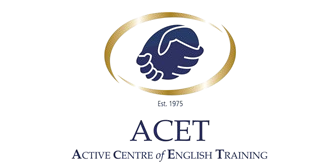
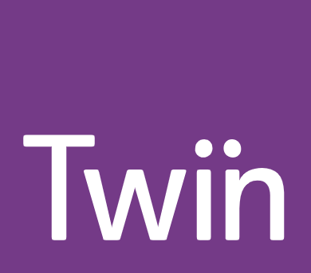

Destacado
EMERALD
📍 Dublín (Rathgar, Dublín 6)
Prestigiosa institución con más de 30 años de experiencia, ubicada en una mansión victoriana con jardines privados.
Programas: Inglés General, Intensivo, Preparación de Exámenes (IELTS, Cambridge) y cursos para profesores.
Ventajas: Mentoría académica personalizada y un entorno de estudio tranquilo y exclusivo.
horarios:
Mañana: 09:00 - 13:00 (L-V).
Tarde: Opciones intensivas disponibles.
Instalaciones: 22 aulas equipadas, laboratorio de idiomas, biblioteca y restaurante propio.
Social: Visitas culturales guiadas y talleres de literatura irlandesa.
Destacado
APOLLO
📍 Dublín (Lad Lane, Dublín 2)
Escuela moderna y premiada situada en el centro de Dublín, conocida por su enfoque innovador y tecnológico.
Programas: Real World English, Preparación de Exámenes y programas para jóvenes adultos.
Ventajas: Única escuela en Dublín premiada con el "Star New School" por su innovación.
horarios:
Mañana: 09:00 - 13:15 (L-V).
Tarde: 13:45 - 17:00 (L-V).
Instalaciones: Edificio de 3 plantas con tecnología audiovisual de última generación y zonas lounge.
Social: Programa "Apollo Experience" con actividades diarias de tarde.
Destacado
ENGLISHOUR
📍 Dublín (Westmoreland Street, Dublin 2)
Expertos en comunicación oral con un método directo, situada en el corazón de la ciudad cerca de Trinity College.
Programas: Cursos enfocados 100% en fluidez, pronunciación y uso natural del idioma.
Ventajas: Grupos reducidos y una de las mejores relaciones calidad-precio del centro.
horarios:
Mañana: 10:00 - 13:20 (L-V).
Tarde: 13:50 - 17:00 (L-V).
Instalaciones: Aulas funcionales con pizarras interactivas en ubicación inmejorable.
Social: Salidas nocturnas a pubs para práctica real y tours históricos.
Destacado
ATLAS 
📍 Dublín (South Richmond Street, Dublín)
Reconocida por su excelencia académica, Atlas ofrece un ambiente vibrante en un edificio icónico frente al Gran Canal.
Programas: General English (20/25h), Inglés de Negocios y clases electivas gratuitas.
Ventajas: Talleres gratuitos de búsqueda de empleo y excelente mix de nacionalidades.
horarios:
Mañana: 09:00 - 13:10 (L-V).
Tarde: Opciones específicas según el curso.
Instalaciones: 25 aulas luminosas, cafetería con vistas y centro de estudio supervisado.
Social: Club de cine, deportes y viajes de fin de semana por Irlanda.
Destacado
DCI
📍 Dublín (Dublin City)
Centro moderno con enfoque en el aprendizaje práctico y técnico, ideal para estudiantes con objetivos académicos claros.
Programas: Inglés General, Académico y Preparación para el examen TIE e IELTS.
Ventajas: Precios competitivos y seguimiento cercano del progreso del alumno.
horarios:
Mañana: 09:00 - 12:15 (L-V).
Tarde: 13:30 - 16:45 (Lunes a Jueves solamente).
Instalaciones: Aulas modernas con tecnología digital y zonas comunes de descanso.
Social: Programa semanal de actividades culturales y visitas a museos.
DELFIN DUBLIN 
📍 Dublín (Parnell Square East, Dublín)
Famosa por su ambiente divertido y social, Delfin ofrece educación de calidad en una ubicación central histórica.
Programas: General English, Business English y Preparación de Exámenes de Cambridge.
Ventajas: Gran comunidad estudiantil y enfoque en "aprender divirtiéndose".
horarios:
Mañana: 09:10 - 12:25 (L-V).
Tarde: 13:50 - 17:05 (L-V).
Instalaciones: Edificio georgiano, sala de juegos, biblioteca y café.
Social: Fiestas estudiantiles, partidos de fútbol y excursiones por toda Irlanda.
EVEREST
📍 Dublín (Cumberland st. South Dublín 2)
Escuela fundada por profesores con un fuerte enfoque académico y seguimiento personalizado del estudiante.
Programas: Inglés General y preparación intensiva para exámenes oficiales.
Ventajas: Uso de datos y feedback constante para asegurar el avance de cada alumno.
horarios:
Mañana: 09:00 - 12:50 (L-V).
Tarde: 13:30 - 16:30 (L-V).
Instalaciones: Aulas modernas y confortables en una zona céntrica pero tranquila.
Social: Actividades culturales enfocadas en la historia y la lengua irlandesa.
ICE
📍 Dublín (Malahide, Co. Dublin)
Ubicada en el pintoresco pueblo costero de Malahide, ideal para una experiencia inmersiva y segura.
Programas: Programas para adultos, jóvenes y campamentos de verano con actividades costeras.
Ventajas: Entorno residencial de alta calidad y ambiente familiar.
horarios:
Mañana: 09:00 - 13:00 (L-V).
Tarde: Programas sociales integrados.
Instalaciones: Centro moderno en el corazón de Malahide, cerca del mar y la estación de tren.
Social: Navegación, paseos por la playa y visitas al Castillo de Malahide.
ACET

📍 Cork (Wellington House, Cork)
Escuela boutique líder en Cork con un servicio altamente personalizado y ambiente profesional.
Programas: Inglés para ejecutivos, preparación de exámenes y formación de profesores.
Ventajas: Miembro de EAQUALS, garantizando los más altos estándares educativos.
horarios:
Mañana: 09:00 - 13:00 (L-V).
Tarde: 14:00 - 16:30 (Opcional).
Instalaciones: Elegante edificio histórico con tecnología moderna y laboratorios.
Social: Tours por la ciudad de Cork y degustaciones en el Mercado Inglés.
CORK ENGLISH COLLEGE
📍 Cork (Saint Patrick’s Bridge, Cork)
Institución familiar premiada, centro oficial de exámenes para Cambridge, IELTS y OET.
Programas: Inglés General, Inglés con fines específicos (Médico, Aviación) y Prácticas de empresa.
Ventajas: Centro oficial de exámenes y excelente soporte al estudiante.
horarios:
Mañana: 09:00 - 13:15 (L-V).
Tarde: 13:45 - 17:00 (L-V).
Instalaciones: 3 centros en el corazón de Cork con bibliotecas y áreas multimedia.
Social: Clases de baile irlandés y excursiones a Blarney Castle.
TWIN ENGLISH CENTRE

📍 Dublín (N Great George's St, Dublin)
Parte de un grupo educativo global, Twin destaca por sus programas que combinan clases y experiencia laboral.
Programas: Inglés General, Inglés para el trabajo y Programas de Prácticas Profesionales.
Ventajas: Enfoque en la empleabilidad y desarrollo de habilidades laborales.
horarios:
Mañana: 09:00 - 13:00 (L-V).
Tarde: 13:45 - 17:00 (L-V).
Instalaciones: Edificio georgiano restaurado con modernas salas de informática.
Social: Talleres de CV y búsqueda de empleo, además de tours culturales.
ULEARN
📍 Dublín (Harcourt Street, Dublin 2)
Con más de 30 años de historia, ULearn es conocida por su ambiente familiar y trato cercano al estudiante.
Programas: General English, Preparación de Exámenes y programas combinados con actividades.
Ventajas: Ubicación premium junto a St. Stephen’s Green y precios competitivos.
horarios:
Mañana: 09:00 - 12:50 (L-V).
Tarde: 13:30 - 16:30 (L-V).
Instalaciones: Aulas coloridas, zona lounge moderna y acceso a recursos digitales.
Social: Actividades sociales diarias que fomentan el uso del inglés fuera del aula.
ERIN SCHOOL
📍 Dublín (Rotunda, Dublin)
Una opción popular por su flexibilidad y multiculturalidad en el centro norte de la ciudad.
Programas: Inglés General y preparación de examen TIE e IELTS.
Ventajas: Excelente mix de nacionalidades y ambiente muy dinámico.
horarios:
Mañana: 09:00 - 12:15 (L-V).
Tarde: 13:45 - 17:00 (L-V).
Instalaciones: Aulas modernas, laboratorio de computación y área de descanso.
Social: Clases de conversación gratuitas y salidas grupales por la ciudad.
CES CORK
📍 Cork (Wellington House, Cork)
Parte del prestigioso grupo CES, ofrece una educación de primer nivel en la amigable ciudad de Cork.
Programas: General English, English for Business y preparación intensiva de IELTS.
Ventajas: Profesores altamente cualificados y acceso a la plataforma online de CES.
horarios:
Mañana: 09:00 - 13:00 (L-V).
Tarde: 14:00 - 16:30 (Programas intensivos).
Instalaciones: Aulas con tecnología digital, sala de autoestudio y cafetería cercana.
Social: Programa social completo que incluye cultura y deportes en Cork.
CORK ENGLISH WORLD
📍 Cork (Bishop St, Cork City)
Especializada en fluidez y confianza, esta escuela independiente ofrece un ambiente cercano y profesional.
Programas: Inglés Intensivo, preparación Cambridge y cursos para profesores (TEFL).
Ventajas: Enfoque en la comunicación real y grupos muy reducidos.
horarios:
Mañana: 09:00 - 13:15 (L-V).
Tarde: Opciones de tutoría y clases extra.
Instalaciones: Edificio céntrico con equipamiento multimedia y zona común acogedora.
Social: Salidas a pubs locales y tours históricos por el condado de Cork.
ENGLISH TALKS
📍 Cork (St. Patrick’s Hill, Cork)
Centro moderno en Cork que combina métodos tradicionales con tecnología educativa innovadora.
Programas: General English, Inglés de Negocios y preparación para exámenes internacionales.
Ventajas: Metodología interactiva y soporte continuo al estudiante internacional.
horarios:
Mañana: 09:00 - 13:00 (L-V).
Tarde: 13:30 - 17:30 (L-V).
Instalaciones: Aulas equipadas, zona de estudio y WIFI de alta velocidad en todo el centro.
Social: Visitas a museos, noches de cine y eventos culturales en Cork.
STUDENT CAMPUS 
📍 Limerick (Patrick Street, Limerick)
Ubicada en la histórica Limerick, ofrece una experiencia auténtica y una excelente inmersión en la vida irlandesa.
Programas: General English y preparación específica para el examen TIE.
Ventajas: Precios muy competitivos y costo de vida más bajo que en Dublín.
horarios:
Mañana: 09:00 - 12:15 (L-V).
Tarde: 13:30 - 16:45 (L-V).
Instalaciones: Aulas modernas, área de café y biblioteca técnica.
Social: Deportes, visitas al King John's Castle y excursiones a los acantilados de Moher.
BIRCHWATER EDUCATION 
📍 Shannon (Ballycasey House, Shannon)
Una escuela única en la región de Shannon, perfecta para quienes buscan tranquilidad y un entorno natural.
Programas: Inglés General y preparación de exámenes en grupos pequeños.
Ventajas: Atención ultra-personalizada y comunidad local muy acogedora.
horarios:
Mañana: 09:00 - 13:00 (L-V).
Tarde: Sesiones de estudio individualizado.
Instalaciones: Instalaciones confortables en un entorno verde, ideal para la concentración.
Social: Senderismo, visitas a castillos locales y actividades comunitarias.
EURO LANGUAGE CENTER
📍 Galway (Middle Street, Galway)
Especialistas en la vibrante Galway, enfocados en integrar al estudiante en la cultura bohemia de la ciudad.
Programas: General English y cursos intensivos de verano para todas las edades.
Ventajas: Localización en el centro de Galway, la capital cultural de Irlanda.
horarios:
Mañana: 09:00 - 13:00 (L-V).
Tarde: Talleres culturales opcionales.
Instalaciones: Aulas acogedoras con equipamiento moderno cerca del Spanish Arch.
Social: Música en vivo, festivales locales y paseos por la bahía de Galway.
BRIDGE MILLS GALWAY 
📍 Galway (The Bridge Mills, Galway)
Ubicada en un molino restaurado del siglo XVIII a orillas del río Corrib, combina historia y excelencia académica.
Programas: General English, Preparación Cambridge/IELTS y cursos para profesores.
Ventajas: Centro con acreditación Quality English en un entorno arquitectónico único.
horarios:
Mañana: 09:00 - 12:30 (L-V).
Tarde: 13:30 - 15:30 (L-V).
Instalaciones: Aulas con vistas al río, biblioteca histórica y café artesanal en el edificio.
Social: Excursiones a Connemara y las Islas Aran.
EGA INTERNATIONAL
📍 Killarney (College Square, Killarney)
Situada en el corazón del Parque Nacional de Killarney, ofrece una experiencia de aprendizaje rodeada de naturaleza.
Programas: Inglés General y programas especiales para familias y grupos.
Ventajas: Ideal para combinar estudio con actividades al aire libre y ecoturismo.
horarios:
Mañana: 09:00 - 13:00 (L-V).
Tarde: Actividades de aventura integradas.
Instalaciones: Centro acogedor con tecnología de apoyo y áreas verdes.
Social: Ciclismo por los lagos, visitas a la Muckross House y cultura gaélica.
KILLARNEY SCHOOL OF ENGLISH
📍 Killarney (Muckross Road, Killarney)
Escuela familiar con décadas de experiencia, conocida por su calidez y su entorno paisajístico espectacular.
Programas: Cursos de inglés para adultos, jóvenes y programas familiares completos.
Ventajas: Ambiente extremadamente acogedor y seguro en una de las zonas más bellas de Irlanda.
horarios:
Mañana: 09:30 - 12:45 (L-V).
Tarde: Opciones de clases individuales y sociales.
Instalaciones: Aulas luminosas con vistas a la montaña y zonas de descanso para estudiantes.
Social: Kayak, equitación y tours por el Anillo de Kerry.
ATC DUBLIN
📍 Dublín (Bray, Dublin)
ATC ofrece programas de alta calidad en Bray, una hermosa ciudad costera a solo 35 minutos del centro de Dublín.
Programas: Inglés General, Intensivo y preparación específica de exámenes internacionales.
Ventajas: Localización costera con acceso rápido a la capital y ambiente relajado.
horarios:
Mañana: 09:00 - 13:30 (L-V).
Tarde: Opciones intensivas por la tarde.
Instalaciones: Edificio moderno frente al mar con aulas tecnológicas y sala de estudiantes.
Social: Paseos por los acantilados de Bray-Greystones y actividades en Dublín.
CITY COLLEGE DUBLIN
📍 Dublín (George Street, Dublín 2)
Enfoque profesional y académico de alto nivel en una institución que ofrece formación para el mundo real.
Programas: Inglés General Académico, Business English y diplomas profesionales.
Ventajas: Ambiente más maduro y profesional, ideal para networking y carrera.
horarios:
Mañana: 09:00 - 12:15 (L-V).
Tarde: 13:30 - 16:45 (Lunes a Jueves solamente).
Instalaciones: Campus urbano moderno con recursos universitarios y biblioteca digital.
Social: Conferencias invitadas y eventos de desarrollo profesional.
CORK ENGLISH ACADEMY
📍 Cork (Drinan Street, Cork City)
Academia independiente de alta calidad que destaca por su trato personalizado y su excelente ubicación en Cork.
Programas: General English e Inglés Académico para estancias de larga duración (Work & Study).
Ventajas: Especialistas en el programa de 25 semanas con permiso de trabajo.
horarios:
Mañana: 09:00 - 12:15 (L-V).
Tarde: 13:00 - 16:15 (L-V).
Instalaciones: Aulas modernas, laboratorio de informática y área social con café gratuito.
Social: Programa de actividades locales para explorar la vida real en Cork.
DCE ENGLISH
📍 Dublín (North Cumberland Street, Dublín 1)
DCE se centra en proporcionar una educación accesible y efectiva en una ubicación céntrica y conveniente.
Programas: Inglés General y preparación específica para exámenes habilitantes para trabajar.
Ventajas: Precios altamente competitivos y flexibilidad en las inscripciones.
horarios:
Mañana: 09:00 - 12:15 (L-V).
Tarde: 13:45 - 17:00 (L-V).
Instalaciones: Aulas funcionales equipadas con medios digitales en el centro de Dublín.
Social: Actividades recreativas y grupos de intercambio de idiomas.
DORSET COLLEGE
📍 Dublín (Belvedere Place, Dublín 1)
Institución educativa integral que ofrece desde cursos de inglés hasta grados universitarios, fomentando el progreso académico.
Programas: Inglés Académico puente hacia estudios superiores y General English.
Ventajas: Ambiente universitario real y posibilidad de continuar estudios técnicos o de grado.
horarios:
Mañana: 09:00 - 12:15 (L-V).
Tarde: 13:45 - 17:00 (L-V).
Instalaciones: Campus amplio con biblioteca, laboratorios y soporte académico completo.
Social: Integración con estudiantes de carreras universitarias y clubes deportivos.
ISI DUBLIN
📍 Dublín (Meetinghouse Lane, Dublin 7)
Combina un diseño interior moderno e industrial con un edificio histórico, ganadora de múltiples premios "Star School".
Programas: Inglés General e Inglés de Negocios en grupos de máximo 15 alumnos.
Ventajas: Acreditada por EAQUALS y premiada internacionalmente por su calidad.
horarios:
Mañana: 09:00 - 12:15 (L-V).
Tarde: 13:30 - 16:45 (L-V).
Instalaciones: Aulas con muros de piedra vista, pizarras digitales y cafetería "student hub".
Social: Tours por el barrio de Smithfield y actividades nocturnas temáticas.
LIMERICK LANGUAGE CENTRE 
📍 Limerick (Mallow Street, Limerick)
Ubicada en un elegante edificio georgiano, esta escuela es famosa por su ambiente cálido y profesorado experto.
Programas: Inglés General y preparación intensiva de exámenes de Cambridge.
Ventajas: Ambiente familiar donde cada estudiante es conocido por su nombre.
horarios:
Mañana: 09:00 - 12:50 (L-V).
Tarde: Sesiones extra de conversación.
Instalaciones: Salas de estudio acogedoras y cocina para estudiantes.
Social: Visitas a Bunratty Castle y eventos de integración local.
SWAN DUBLIN
📍 Dublín (Grafton Street, Dublin 2)
Fundada por una familia de profesores, Swan está situada en la calle más famosa de Dublín: Grafton Street.
Programas: General English y programas especiales de inmersión cultural.
Ventajas: Ubicación inmejorable y gran experiencia en gestión de grupos internacionales.
horarios:
Mañana: 09:00 - 13:00 (L-V)€3,300.
Tarde: 13:45 - 17:00 (L-V)€3,300.
Instalaciones: Aulas históricas con tecnología digital en el centro neurálgico de la ciudad.
Social: Salidas a parques, museos y el vibrante Temple Bar.
KAPLAN
📍 Dublín (Temple Bar, Dublin)
Líder global en educación, Kaplan Dublín se ubica en un edificio del siglo XVIII junto al río Liffey.
Programas: Inglés K+ (método propio), Preparación IELTS y cursos de larga duración.
Ventajas: Acceso a la plataforma de aprendizaje K+ y red global de escuelas.
horarios:
Mañana: 08:30 - 12:45 (L-V).
Tarde: 13:45 - 18:00 (L-V).
Instalaciones: 10 aulas, centro multimedia y sala de estudiantes en Temple Bar.
Social: Actividades premium por Dublín y excursiones a Glendalough.
ELI DUBLIN
📍 Dublín (Herbert Place, Dublin 2)
ELI ofrece una experiencia de alta calidad en edificios georgianos magníficamente restaurados en el distrito de los negocios.
Programas: General English, Preparación de Exámenes y Programas de Trabajo para alumnos No-EU.
Ventajas: Acreditada por ACELS y EAQUALS, con un enfoque en la excelencia del servicio.
horarios:
Mañana: 09:00 - 12:15 (L-V).
Tarde: 13:45 - 17:00 (L-V).
Instalaciones: Aulas de diseño, cocinas modernas y espacios sociales de primer nivel.
Social: Programa social dinámico y activo durante todo el año.